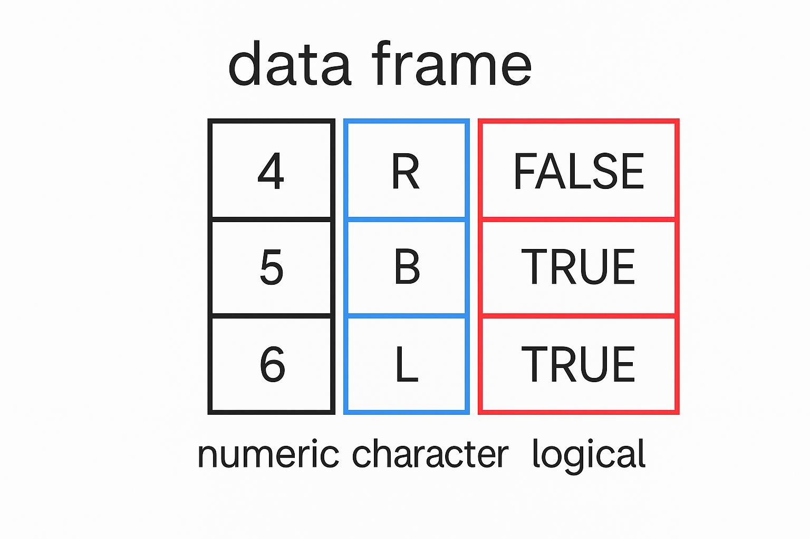

colombia_data <- read.csv("National-level data_COLOMBIA_20021229_20221231.csv")Starting with Data
Understanding Data
Before diving into analysis, it’s essential to first gain a clear understanding of your dataset. Proper data analysis starts with knowing what your data represents and how it is structured.
Reading in data from a file
In this section, we will begin by examining an example dataset on dengue. To do this, we’ll start by loading the data into R and taking a closer look at its contents. We will use read.csv() to load into memory the content of the CSV file as an object of class data.frame.
This command won’t display anything on its own because the data is being assigned to a variable. To confirm that the data was loaded correctly, you can use View to check it out:
View(colombia_data)we can alos just look at the first few rows using the head() function:
head(colombia_data) adm_0_name adm_1_name adm_2_name full_name ISO_A0 FAO_GAUL_code RNE_iso_code
1 COLOMBIA NA NA COLOMBIA COL 54 COL
2 COLOMBIA NA NA COLOMBIA COL 54 COL
3 COLOMBIA NA NA COLOMBIA COL 54 COL
4 COLOMBIA NA NA COLOMBIA COL 54 COL
5 COLOMBIA NA NA COLOMBIA COL 54 COL
6 COLOMBIA NA NA COLOMBIA COL 54 COL
IBGE_code calendar_start_date calendar_end_date Year dengue_total
1 NA 2002-12-29 2003-12-27 2002 382
2 NA 2004-01-04 2005-01-01 2004 1614
3 NA 2005-01-02 2005-12-31 2005 1938
4 NA 2006-01-01 2006-12-30 2006 1667
5 NA 2006-12-31 2007-12-29 2006 3257
6 NA 2006-12-31 2007-01-06 2006 661
case_definition_standardised S_res T_res UUID
1 Total Admin0 Year MOH-COL-2005-Y01-00
2 Total Admin0 Year MOH-COL-2005-Y01-00
3 Total Admin0 Year MOH-COL-2005-Y01-00
4 Total Admin0 Year MOH-COL-2006-Y01-01
5 Total Admin0 Year MOH-COL-2008-Y01-02
6 Total Admin0 Week MOH-COL-20072022-Y02-00Note
The
read.csv()function assumes that values are separated by commas. However, in some regions, commas are used as decimal marks and semicolons (;) are used instead to separate fields. In such cases, you should useread.csv2(), which works similarly but expects different separators.If your data uses another format, you can customize separators manually. For example, the more general
read.table()function allows you to define both the field separator and other options. To learn more, type?read.csvin your R console.For tab-separated files,
read.delim()is another helpful function. All of these are actually shortcuts toread.table()with preset options. For instance, the same data can be loaded using:colombia_data <- read.table(file = "datat/National-level data_COLOMBIA_20021229_20221231.csv", sep = ",", header = TRUE)Just remember to set
header = TRUEif your file contains column names, sinceread.table()assumes otherwise by default.
Data frames
In R, data frames are one of the most commonly used data structures. They are extremely useful because many real-world datasets come in table format, which aligns well with how data frames organize information. In fact, data frames are the standard format for most data manipulation, plotting, and analysis tasks in R.
A data frame stores data in a tabular layout where each column is a vector of the same length. Each column can hold only one type of data (e.g., numeric, character, or logical), but different columns can hold different types. For example, one column might contain numbers, another column text, and another logical values like TRUE or FALSE.
Below is an illustration showing a simple data frame with three rows and three columns: one numeric, one character, and one logical:

To explore the structure of a data frame in R, you can use the str() function. This gives you a quick overview of column names, data types, and a preview of values:
str(colombia_data)'data.frame': 844 obs. of 16 variables:
$ adm_0_name : chr "COLOMBIA" "COLOMBIA" "COLOMBIA" "COLOMBIA" ...
$ adm_1_name : logi NA NA NA NA NA NA ...
$ adm_2_name : logi NA NA NA NA NA NA ...
$ full_name : chr "COLOMBIA" "COLOMBIA" "COLOMBIA" "COLOMBIA" ...
$ ISO_A0 : chr "COL" "COL" "COL" "COL" ...
$ FAO_GAUL_code : int 54 54 54 54 54 54 54 54 54 54 ...
$ RNE_iso_code : chr "COL" "COL" "COL" "COL" ...
$ IBGE_code : logi NA NA NA NA NA NA ...
$ calendar_start_date : chr "2002-12-29" "2004-01-04" "2005-01-02" "2006-01-01" ...
$ calendar_end_date : chr "2003-12-27" "2005-01-01" "2005-12-31" "2006-12-30" ...
$ Year : int 2002 2004 2005 2006 2006 2006 2007 2007 2007 2007 ...
$ dengue_total : int 382 1614 1938 1667 3257 661 3602 611 490 440 ...
$ case_definition_standardised: chr "Total" "Total" "Total" "Total" ...
$ S_res : chr "Admin0" "Admin0" "Admin0" "Admin0" ...
$ T_res : chr "Year" "Year" "Year" "Year" ...
$ UUID : chr "MOH-COL-2005-Y01-00" "MOH-COL-2005-Y01-00" "MOH-COL-2005-Y01-00" "MOH-COL-2006-Y01-01" ...Inspecting data.frame Objects
Before we start analysing the data, it’s a good idea to take a quick look to understand what we’re working with. We also want to make sure our data has loaded correctly into R.
We’ve already seen a few helpful functions like head(), view(), and str() that give us a quick look at the contents and structure of a data frame. Here are some other basic functions that can help us explore our data:’
Check the Size
dim(data)— tells you the number of rows and columns.nrow(data)— gives you the number of rows.ncol(data)— gives you the number of columns.
View the Content
head(data)— shows the first few rows (default is 6).tail(data)— shows the last few rows.
Check the Names
names(data)— shows the column names.rownames(data)— shows the row names (usually just numbers).
Get a Quick Summary
str(data)— gives an overview of the data frame: column names, data types, and a preview of values.summary(data)— provides basic statistics (like min, max, mean) for each column.
Note: Most of these functions also work with other types of objects, not just data.frame.
Indexing and Subsetting Data Frames
Numeric Indexing
A data frame in R is like a table with rows and columns. To look at specific values inside this table, we use numbers to show the position of each item.
To get data from a certain row and column, we use square brackets like this: data[row, column]. For example, [2,3] means row 2, column 3.
Important: [] are for accessing data. () are for calling functions like mean() or summary().
Let’s look at a few more examples of how to select parts of a data frame using numbers.
# get the value in the 1st row and 1st column
colombia_data[1, 1][1] "COLOMBIA"# get the value in the 1st row and 6th column
colombia_data[1, 6][1] 54# get the entire 1st column as a vector
colombia_data[, 1] [1] "COLOMBIA" "COLOMBIA" "COLOMBIA" "COLOMBIA" "COLOMBIA" "COLOMBIA"
[7] "COLOMBIA" "COLOMBIA" "COLOMBIA" "COLOMBIA" "COLOMBIA" "COLOMBIA"
[13] "COLOMBIA" "COLOMBIA" "COLOMBIA" "COLOMBIA" "COLOMBIA" "COLOMBIA"
[19] "COLOMBIA" "COLOMBIA" "COLOMBIA" "COLOMBIA" "COLOMBIA" "COLOMBIA"
[25] "COLOMBIA" "COLOMBIA" "COLOMBIA" "COLOMBIA" "COLOMBIA" "COLOMBIA"
[31] "COLOMBIA" "COLOMBIA" "COLOMBIA" "COLOMBIA" "COLOMBIA" "COLOMBIA"
[37] "COLOMBIA" "COLOMBIA" "COLOMBIA" "COLOMBIA" "COLOMBIA" "COLOMBIA"
[43] "COLOMBIA" "COLOMBIA" "COLOMBIA" "COLOMBIA" "COLOMBIA" "COLOMBIA"
[49] "COLOMBIA" "COLOMBIA" "COLOMBIA" "COLOMBIA" "COLOMBIA" "COLOMBIA"
[55] "COLOMBIA" "COLOMBIA" "COLOMBIA" "COLOMBIA" "COLOMBIA" "COLOMBIA"
[61] "COLOMBIA" "COLOMBIA" "COLOMBIA" "COLOMBIA" "COLOMBIA" "COLOMBIA"
[67] "COLOMBIA" "COLOMBIA" "COLOMBIA" "COLOMBIA" "COLOMBIA" "COLOMBIA"
[73] "COLOMBIA" "COLOMBIA" "COLOMBIA" "COLOMBIA" "COLOMBIA" "COLOMBIA"
[79] "COLOMBIA" "COLOMBIA" "COLOMBIA" "COLOMBIA" "COLOMBIA" "COLOMBIA"
[85] "COLOMBIA" "COLOMBIA" "COLOMBIA" "COLOMBIA" "COLOMBIA" "COLOMBIA"
[91] "COLOMBIA" "COLOMBIA" "COLOMBIA" "COLOMBIA" "COLOMBIA" "COLOMBIA"
[97] "COLOMBIA" "COLOMBIA" "COLOMBIA" "COLOMBIA" "COLOMBIA" "COLOMBIA"
[103] "COLOMBIA" "COLOMBIA" "COLOMBIA" "COLOMBIA" "COLOMBIA" "COLOMBIA"
[109] "COLOMBIA" "COLOMBIA" "COLOMBIA" "COLOMBIA" "COLOMBIA" "COLOMBIA"
[115] "COLOMBIA" "COLOMBIA" "COLOMBIA" "COLOMBIA" "COLOMBIA" "COLOMBIA"
[121] "COLOMBIA" "COLOMBIA" "COLOMBIA" "COLOMBIA" "COLOMBIA" "COLOMBIA"
[127] "COLOMBIA" "COLOMBIA" "COLOMBIA" "COLOMBIA" "COLOMBIA" "COLOMBIA"
[133] "COLOMBIA" "COLOMBIA" "COLOMBIA" "COLOMBIA" "COLOMBIA" "COLOMBIA"
[139] "COLOMBIA" "COLOMBIA" "COLOMBIA" "COLOMBIA" "COLOMBIA" "COLOMBIA"
[145] "COLOMBIA" "COLOMBIA" "COLOMBIA" "COLOMBIA" "COLOMBIA" "COLOMBIA"
[151] "COLOMBIA" "COLOMBIA" "COLOMBIA" "COLOMBIA" "COLOMBIA" "COLOMBIA"
[157] "COLOMBIA" "COLOMBIA" "COLOMBIA" "COLOMBIA" "COLOMBIA" "COLOMBIA"
[163] "COLOMBIA" "COLOMBIA" "COLOMBIA" "COLOMBIA" "COLOMBIA" "COLOMBIA"
[169] "COLOMBIA" "COLOMBIA" "COLOMBIA" "COLOMBIA" "COLOMBIA" "COLOMBIA"
[175] "COLOMBIA" "COLOMBIA" "COLOMBIA" "COLOMBIA" "COLOMBIA" "COLOMBIA"
[181] "COLOMBIA" "COLOMBIA" "COLOMBIA" "COLOMBIA" "COLOMBIA" "COLOMBIA"
[187] "COLOMBIA" "COLOMBIA" "COLOMBIA" "COLOMBIA" "COLOMBIA" "COLOMBIA"
[193] "COLOMBIA" "COLOMBIA" "COLOMBIA" "COLOMBIA" "COLOMBIA" "COLOMBIA"
[199] "COLOMBIA" "COLOMBIA" "COLOMBIA" "COLOMBIA" "COLOMBIA" "COLOMBIA"
[205] "COLOMBIA" "COLOMBIA" "COLOMBIA" "COLOMBIA" "COLOMBIA" "COLOMBIA"
[211] "COLOMBIA" "COLOMBIA" "COLOMBIA" "COLOMBIA" "COLOMBIA" "COLOMBIA"
[217] "COLOMBIA" "COLOMBIA" "COLOMBIA" "COLOMBIA" "COLOMBIA" "COLOMBIA"
[223] "COLOMBIA" "COLOMBIA" "COLOMBIA" "COLOMBIA" "COLOMBIA" "COLOMBIA"
[229] "COLOMBIA" "COLOMBIA" "COLOMBIA" "COLOMBIA" "COLOMBIA" "COLOMBIA"
[235] "COLOMBIA" "COLOMBIA" "COLOMBIA" "COLOMBIA" "COLOMBIA" "COLOMBIA"
[241] "COLOMBIA" "COLOMBIA" "COLOMBIA" "COLOMBIA" "COLOMBIA" "COLOMBIA"
[247] "COLOMBIA" "COLOMBIA" "COLOMBIA" "COLOMBIA" "COLOMBIA" "COLOMBIA"
[253] "COLOMBIA" "COLOMBIA" "COLOMBIA" "COLOMBIA" "COLOMBIA" "COLOMBIA"
[259] "COLOMBIA" "COLOMBIA" "COLOMBIA" "COLOMBIA" "COLOMBIA" "COLOMBIA"
[265] "COLOMBIA" "COLOMBIA" "COLOMBIA" "COLOMBIA" "COLOMBIA" "COLOMBIA"
[271] "COLOMBIA" "COLOMBIA" "COLOMBIA" "COLOMBIA" "COLOMBIA" "COLOMBIA"
[277] "COLOMBIA" "COLOMBIA" "COLOMBIA" "COLOMBIA" "COLOMBIA" "COLOMBIA"
[283] "COLOMBIA" "COLOMBIA" "COLOMBIA" "COLOMBIA" "COLOMBIA" "COLOMBIA"
[289] "COLOMBIA" "COLOMBIA" "COLOMBIA" "COLOMBIA" "COLOMBIA" "COLOMBIA"
[295] "COLOMBIA" "COLOMBIA" "COLOMBIA" "COLOMBIA" "COLOMBIA" "COLOMBIA"
[301] "COLOMBIA" "COLOMBIA" "COLOMBIA" "COLOMBIA" "COLOMBIA" "COLOMBIA"
[307] "COLOMBIA" "COLOMBIA" "COLOMBIA" "COLOMBIA" "COLOMBIA" "COLOMBIA"
[313] "COLOMBIA" "COLOMBIA" "COLOMBIA" "COLOMBIA" "COLOMBIA" "COLOMBIA"
[319] "COLOMBIA" "COLOMBIA" "COLOMBIA" "COLOMBIA" "COLOMBIA" "COLOMBIA"
[325] "COLOMBIA" "COLOMBIA" "COLOMBIA" "COLOMBIA" "COLOMBIA" "COLOMBIA"
[331] "COLOMBIA" "COLOMBIA" "COLOMBIA" "COLOMBIA" "COLOMBIA" "COLOMBIA"
[337] "COLOMBIA" "COLOMBIA" "COLOMBIA" "COLOMBIA" "COLOMBIA" "COLOMBIA"
[343] "COLOMBIA" "COLOMBIA" "COLOMBIA" "COLOMBIA" "COLOMBIA" "COLOMBIA"
[349] "COLOMBIA" "COLOMBIA" "COLOMBIA" "COLOMBIA" "COLOMBIA" "COLOMBIA"
[355] "COLOMBIA" "COLOMBIA" "COLOMBIA" "COLOMBIA" "COLOMBIA" "COLOMBIA"
[361] "COLOMBIA" "COLOMBIA" "COLOMBIA" "COLOMBIA" "COLOMBIA" "COLOMBIA"
[367] "COLOMBIA" "COLOMBIA" "COLOMBIA" "COLOMBIA" "COLOMBIA" "COLOMBIA"
[373] "COLOMBIA" "COLOMBIA" "COLOMBIA" "COLOMBIA" "COLOMBIA" "COLOMBIA"
[379] "COLOMBIA" "COLOMBIA" "COLOMBIA" "COLOMBIA" "COLOMBIA" "COLOMBIA"
[385] "COLOMBIA" "COLOMBIA" "COLOMBIA" "COLOMBIA" "COLOMBIA" "COLOMBIA"
[391] "COLOMBIA" "COLOMBIA" "COLOMBIA" "COLOMBIA" "COLOMBIA" "COLOMBIA"
[397] "COLOMBIA" "COLOMBIA" "COLOMBIA" "COLOMBIA" "COLOMBIA" "COLOMBIA"
[403] "COLOMBIA" "COLOMBIA" "COLOMBIA" "COLOMBIA" "COLOMBIA" "COLOMBIA"
[409] "COLOMBIA" "COLOMBIA" "COLOMBIA" "COLOMBIA" "COLOMBIA" "COLOMBIA"
[415] "COLOMBIA" "COLOMBIA" "COLOMBIA" "COLOMBIA" "COLOMBIA" "COLOMBIA"
[421] "COLOMBIA" "COLOMBIA" "COLOMBIA" "COLOMBIA" "COLOMBIA" "COLOMBIA"
[427] "COLOMBIA" "COLOMBIA" "COLOMBIA" "COLOMBIA" "COLOMBIA" "COLOMBIA"
[433] "COLOMBIA" "COLOMBIA" "COLOMBIA" "COLOMBIA" "COLOMBIA" "COLOMBIA"
[439] "COLOMBIA" "COLOMBIA" "COLOMBIA" "COLOMBIA" "COLOMBIA" "COLOMBIA"
[445] "COLOMBIA" "COLOMBIA" "COLOMBIA" "COLOMBIA" "COLOMBIA" "COLOMBIA"
[451] "COLOMBIA" "COLOMBIA" "COLOMBIA" "COLOMBIA" "COLOMBIA" "COLOMBIA"
[457] "COLOMBIA" "COLOMBIA" "COLOMBIA" "COLOMBIA" "COLOMBIA" "COLOMBIA"
[463] "COLOMBIA" "COLOMBIA" "COLOMBIA" "COLOMBIA" "COLOMBIA" "COLOMBIA"
[469] "COLOMBIA" "COLOMBIA" "COLOMBIA" "COLOMBIA" "COLOMBIA" "COLOMBIA"
[475] "COLOMBIA" "COLOMBIA" "COLOMBIA" "COLOMBIA" "COLOMBIA" "COLOMBIA"
[481] "COLOMBIA" "COLOMBIA" "COLOMBIA" "COLOMBIA" "COLOMBIA" "COLOMBIA"
[487] "COLOMBIA" "COLOMBIA" "COLOMBIA" "COLOMBIA" "COLOMBIA" "COLOMBIA"
[493] "COLOMBIA" "COLOMBIA" "COLOMBIA" "COLOMBIA" "COLOMBIA" "COLOMBIA"
[499] "COLOMBIA" "COLOMBIA" "COLOMBIA" "COLOMBIA" "COLOMBIA" "COLOMBIA"
[505] "COLOMBIA" "COLOMBIA" "COLOMBIA" "COLOMBIA" "COLOMBIA" "COLOMBIA"
[511] "COLOMBIA" "COLOMBIA" "COLOMBIA" "COLOMBIA" "COLOMBIA" "COLOMBIA"
[517] "COLOMBIA" "COLOMBIA" "COLOMBIA" "COLOMBIA" "COLOMBIA" "COLOMBIA"
[523] "COLOMBIA" "COLOMBIA" "COLOMBIA" "COLOMBIA" "COLOMBIA" "COLOMBIA"
[529] "COLOMBIA" "COLOMBIA" "COLOMBIA" "COLOMBIA" "COLOMBIA" "COLOMBIA"
[535] "COLOMBIA" "COLOMBIA" "COLOMBIA" "COLOMBIA" "COLOMBIA" "COLOMBIA"
[541] "COLOMBIA" "COLOMBIA" "COLOMBIA" "COLOMBIA" "COLOMBIA" "COLOMBIA"
[547] "COLOMBIA" "COLOMBIA" "COLOMBIA" "COLOMBIA" "COLOMBIA" "COLOMBIA"
[553] "COLOMBIA" "COLOMBIA" "COLOMBIA" "COLOMBIA" "COLOMBIA" "COLOMBIA"
[559] "COLOMBIA" "COLOMBIA" "COLOMBIA" "COLOMBIA" "COLOMBIA" "COLOMBIA"
[565] "COLOMBIA" "COLOMBIA" "COLOMBIA" "COLOMBIA" "COLOMBIA" "COLOMBIA"
[571] "COLOMBIA" "COLOMBIA" "COLOMBIA" "COLOMBIA" "COLOMBIA" "COLOMBIA"
[577] "COLOMBIA" "COLOMBIA" "COLOMBIA" "COLOMBIA" "COLOMBIA" "COLOMBIA"
[583] "COLOMBIA" "COLOMBIA" "COLOMBIA" "COLOMBIA" "COLOMBIA" "COLOMBIA"
[589] "COLOMBIA" "COLOMBIA" "COLOMBIA" "COLOMBIA" "COLOMBIA" "COLOMBIA"
[595] "COLOMBIA" "COLOMBIA" "COLOMBIA" "COLOMBIA" "COLOMBIA" "COLOMBIA"
[601] "COLOMBIA" "COLOMBIA" "COLOMBIA" "COLOMBIA" "COLOMBIA" "COLOMBIA"
[607] "COLOMBIA" "COLOMBIA" "COLOMBIA" "COLOMBIA" "COLOMBIA" "COLOMBIA"
[613] "COLOMBIA" "COLOMBIA" "COLOMBIA" "COLOMBIA" "COLOMBIA" "COLOMBIA"
[619] "COLOMBIA" "COLOMBIA" "COLOMBIA" "COLOMBIA" "COLOMBIA" "COLOMBIA"
[625] "COLOMBIA" "COLOMBIA" "COLOMBIA" "COLOMBIA" "COLOMBIA" "COLOMBIA"
[631] "COLOMBIA" "COLOMBIA" "COLOMBIA" "COLOMBIA" "COLOMBIA" "COLOMBIA"
[637] "COLOMBIA" "COLOMBIA" "COLOMBIA" "COLOMBIA" "COLOMBIA" "COLOMBIA"
[643] "COLOMBIA" "COLOMBIA" "COLOMBIA" "COLOMBIA" "COLOMBIA" "COLOMBIA"
[649] "COLOMBIA" "COLOMBIA" "COLOMBIA" "COLOMBIA" "COLOMBIA" "COLOMBIA"
[655] "COLOMBIA" "COLOMBIA" "COLOMBIA" "COLOMBIA" "COLOMBIA" "COLOMBIA"
[661] "COLOMBIA" "COLOMBIA" "COLOMBIA" "COLOMBIA" "COLOMBIA" "COLOMBIA"
[667] "COLOMBIA" "COLOMBIA" "COLOMBIA" "COLOMBIA" "COLOMBIA" "COLOMBIA"
[673] "COLOMBIA" "COLOMBIA" "COLOMBIA" "COLOMBIA" "COLOMBIA" "COLOMBIA"
[679] "COLOMBIA" "COLOMBIA" "COLOMBIA" "COLOMBIA" "COLOMBIA" "COLOMBIA"
[685] "COLOMBIA" "COLOMBIA" "COLOMBIA" "COLOMBIA" "COLOMBIA" "COLOMBIA"
[691] "COLOMBIA" "COLOMBIA" "COLOMBIA" "COLOMBIA" "COLOMBIA" "COLOMBIA"
[697] "COLOMBIA" "COLOMBIA" "COLOMBIA" "COLOMBIA" "COLOMBIA" "COLOMBIA"
[703] "COLOMBIA" "COLOMBIA" "COLOMBIA" "COLOMBIA" "COLOMBIA" "COLOMBIA"
[709] "COLOMBIA" "COLOMBIA" "COLOMBIA" "COLOMBIA" "COLOMBIA" "COLOMBIA"
[715] "COLOMBIA" "COLOMBIA" "COLOMBIA" "COLOMBIA" "COLOMBIA" "COLOMBIA"
[721] "COLOMBIA" "COLOMBIA" "COLOMBIA" "COLOMBIA" "COLOMBIA" "COLOMBIA"
[727] "COLOMBIA" "COLOMBIA" "COLOMBIA" "COLOMBIA" "COLOMBIA" "COLOMBIA"
[733] "COLOMBIA" "COLOMBIA" "COLOMBIA" "COLOMBIA" "COLOMBIA" "COLOMBIA"
[739] "COLOMBIA" "COLOMBIA" "COLOMBIA" "COLOMBIA" "COLOMBIA" "COLOMBIA"
[745] "COLOMBIA" "COLOMBIA" "COLOMBIA" "COLOMBIA" "COLOMBIA" "COLOMBIA"
[751] "COLOMBIA" "COLOMBIA" "COLOMBIA" "COLOMBIA" "COLOMBIA" "COLOMBIA"
[757] "COLOMBIA" "COLOMBIA" "COLOMBIA" "COLOMBIA" "COLOMBIA" "COLOMBIA"
[763] "COLOMBIA" "COLOMBIA" "COLOMBIA" "COLOMBIA" "COLOMBIA" "COLOMBIA"
[769] "COLOMBIA" "COLOMBIA" "COLOMBIA" "COLOMBIA" "COLOMBIA" "COLOMBIA"
[775] "COLOMBIA" "COLOMBIA" "COLOMBIA" "COLOMBIA" "COLOMBIA" "COLOMBIA"
[781] "COLOMBIA" "COLOMBIA" "COLOMBIA" "COLOMBIA" "COLOMBIA" "COLOMBIA"
[787] "COLOMBIA" "COLOMBIA" "COLOMBIA" "COLOMBIA" "COLOMBIA" "COLOMBIA"
[793] "COLOMBIA" "COLOMBIA" "COLOMBIA" "COLOMBIA" "COLOMBIA" "COLOMBIA"
[799] "COLOMBIA" "COLOMBIA" "COLOMBIA" "COLOMBIA" "COLOMBIA" "COLOMBIA"
[805] "COLOMBIA" "COLOMBIA" "COLOMBIA" "COLOMBIA" "COLOMBIA" "COLOMBIA"
[811] "COLOMBIA" "COLOMBIA" "COLOMBIA" "COLOMBIA" "COLOMBIA" "COLOMBIA"
[817] "COLOMBIA" "COLOMBIA" "COLOMBIA" "COLOMBIA" "COLOMBIA" "COLOMBIA"
[823] "COLOMBIA" "COLOMBIA" "COLOMBIA" "COLOMBIA" "COLOMBIA" "COLOMBIA"
[829] "COLOMBIA" "COLOMBIA" "COLOMBIA" "COLOMBIA" "COLOMBIA" "COLOMBIA"
[835] "COLOMBIA" "COLOMBIA" "COLOMBIA" "COLOMBIA" "COLOMBIA" "COLOMBIA"
[841] "COLOMBIA" "COLOMBIA" "COLOMBIA" "COLOMBIA"# get the first 3 values from the 7th column
colombia_data[1:3, 7][1] "COL" "COL" "COL"# get the entire 3rd row as a data frame
colombia_data[3, ] adm_0_name adm_1_name adm_2_name full_name ISO_A0 FAO_GAUL_code RNE_iso_code
3 COLOMBIA NA NA COLOMBIA COL 54 COL
IBGE_code calendar_start_date calendar_end_date Year dengue_total
3 NA 2005-01-02 2005-12-31 2005 1938
case_definition_standardised S_res T_res UUID
3 Total Admin0 Year MOH-COL-2005-Y01-00# get the first 6 rows (just like the head() function)
head_colombia <- colombia_data[1:6, ]The : operator helps you create a sequence of numbers. For example:
1:10gives you numbers from 1 to 1010:1gives you numbers from 10 to 1
You can also leave out (exclude) parts of a data frame using the minus - sign:
# all columns except the first one
colombia_data[, -1]
# similar to head(colombia), keeps only rows 1 to 6
colombia_data[-(7:34786), ] Name Indexing
Instead of using numbers to access rows and columns, we can also use the names of the columns directly. This is called name indexing.
Here are a few examples using the colombia data:
# get the "value" column as a vector
colombia_data[, "dengue_total"] [1] 382 1614 1938 1667 3257 661 3602 611 490 440 775 623 922 621 629
[16] 727 731 1005 589 902 1192 1213 589 1141 1041 1017 800 629 657 1056
[31] 1041 1005 967 766 812 657 896 905 776 822 790 840 1153 752 720
[46] 584 692 787 668 696 696 834 736 685 1104 591 410 528 709 868
[61] 862 840 821 790 844 828 740 732 598 593 654 743 715 672 679
[76] 619 715 706 680 614 750 727 706 611 709 736 696 689 672 588
[91] 572 559 574 632 592 622 664 661 693 727 785 789 735 742 690
[106] 561 741 674 676 484 414 711 697 695 639 725 673 670 622 756
[121] 612 635 610 687 628 718 771 672 670 769 858 838 975 926 882
[136] 866 962 1001 1032 1058 1082 1108 1128 1148 1169 1225 1197 1156 1258 1240
[151] 1193 1226 1278 1149 1254 1217 1335 1469 1546 1688 1537 1478 1507 5010 2177
[166] 2457 2697 3099 3713 4229 4509 4308 4782 4569 4927 4400 4577 4874 4466 4824
[181] 4600 4496 4771 4785 4511 4395 4374 4244 3892 3632 3494 3181 3287 3012 3028
[196] 2648 2600 2456 2326 2085 1831 1773 1550 1511 1427 1296 1143 1167 1081 1010
[211] 906 897 944 835 739 720 1255 759 795 741 660 673 553 603 527
[226] 545 526 470 480 530 519 494 530 591 584 590 617 622 626 640
[241] 634 605 549 652 560 546 509 550 520 523 455 571 486 483 507
[256] 513 470 480 524 552 540 544 569 597 599 632 648 688 697 1448
[271] 905 1002 1033 1018 1063 1005 1019 948 950 994 953 1170 1136 1292 1375
[286] 1345 1448 1689 981 802 813 849 895 909 915 909 1061 1009 1004 869
[301] 920 742 795 929 986 1147 1111 1080 1018 951 902 950 902 1053 967
[316] 1052 1061 1174 1129 1232 1283 1283 1151 1765 1773 1917 1932 2060 2108 2189
[331] 2146 2050 2070 3084 3279 2924 2939 2877 2866 3109 3005 2763 2798 2844 2605
[346] 3056 3002 3013 2703 2435 2366 2167 2292 2048 2101 2204 2231 2260 2292 2212
[361] 2404 2370 2291 2183 2469 2528 2218 2276 2311 1964 1789 2362 2046 2001 2670
[376] 2467 2338 2434 2079 2054 2014 2010 1742 1793 1884 1819 1743 2098 1839 1729
[391] 1878 1844 1816 1812 1974 1707 2011 2104 1724 2087 2149 2091 2100 2025 1836
[406] 1879 1912 1746 1869 2122 2173 2090 2149 2148 2236 2416 2207 2114 2131 2024
[421] 1849 2068 2139 2081 2038 2464 1821 2115 1366 1460 1738 1934 2245 2184 2493
[436] 2388 1992 1930 1839 2106 1977 2085 1921 2015 1967 1732 1688 2116 1807 1757
[451] 1924 1877 1850 1743 1717 1667 1507 1526 1454 1585 1577 1431 1374 1360 1280
[466] 1361 1416 1585 1664 1732 1719 1724 1917 2149 2271 2259 2457 2313 2547 2890
[481] 2630 2179 2938 2422 2844 2559 1589 1486 1528 1126 928 832 812 2762 2981
[496] 1920 3115 1577 3289 3180 3007 2661 2906 2244 1035 2440 924 2658 2491 2544
[511] 2699 2578 2543 2394 2192 1971 2040 1622 1395 1322 1210 1149 808 1081 930
[526] 930 960 939 945 872 900 651 518 466 487 403 475 501 483 439
[541] 434 452 386 417 482 396 812 816 459 510 496 435 431 432 756
[556] 691 629 477 483 465 404 419 476 432 430 466 526 505 450 508
[571] 453 416 481 413 385 468 402 392 366 419 411 481 463 455 426
[586] 533 452 425 458 403 411 530 488 416 432 477 493 1269 1491 515
[601] 409 897 383 578 855 330 1332 1582 1227 808 683 1585 797 759 1587
[616] 914 870 886 911 917 1748 734 887 1055 821 884 1163 1207 914 931
[631] 906 1447 876 933 1016 1655 1634 2633 3195 3077 1631 2822 1678 2647 1747
[646] 1840 1669 1669 2287 1860 2286 1830 2347 1832 2625 1919 2523 1799 2398 1853
[661] 2376 2022 2150 3074 1957 2698 2292 2353 2239 2536 2344 2522 2447 2566 2873
[676] 2819 2876 2679 2957 2672 2525 3038 2780 2887 2832 3578 2678 3099 3431 639
[691] 623 3622 647 3452 636 3650 698 3709 632 3428 631 3223 634 3145 702
[706] 3237 680 2880 1331 1841 1701 1063 1684 910 1609 1037 1582 894 1561 749
[721] 1450 685 1474 714 1499 1435 659 1230 623 1061 668 672 670 790 687
[736] 661 644 726 661 711 658 673 626 1576 669 1398 671 582 677 594
[751] 698 622 687 629 718 632 600 690 571 619 687 551 796 527 574
[766] 774 570 844 515 899 488 1012 504 1146 568 1138 595 1347 589 1411
[781] 647 1479 1604 1518 1595 1855 1985 1743 2172 1951 1777 1655 1074 1540 931
[796] 946 1494 844 1590 931 957 829 784 1709 834 841 839 1697 904 1675
[811] 985 1603 924 1643 1394 880 1565 1115 1561 1134 1239 1398 1422 1548 1553
[826] 1443 1268 1267 1366 1306 1299 1472 1324 1488 1367 1161 1325 1405 1337 1728
[841] 1270 1253 1520 1776# this does the same thing
colombia_data$dengue_total# get the "Country" and "value" columns for the first three rows
# (this mixes row numbers with column names)
colombia_data[1:3, c("Year", "dengue_total")] Year dengue_total
1 2002 382
2 2004 1614
3 2005 1938In RStudio, you can use the Tab key to auto-complete column names, which helps avoid typos.
Logical indexing
Sometimes we want to look at rows in our dataset that match a specific condition. This is called logical indexing. In R, we can use conditions to select the rows that meet our criteria.
Here’s how we can find and work with records where the year is 2007 in our dataset:
# get all the records where Year is 2007 and save those records into a new data frame
year_2007_data <- colombia_data[colombia_data$Year == 2007, ]
# count how many records are from the year 2007
nrow(year_2007_data)[1] 53This method is helpful when you want to focus only on specific parts of your data — for example, all data points from a certain year, a certain region, or with a certain status.
Exercise
Let’s try a few short tasks to help you explore how to work with rows in your dataset.
Create a new data frame that only includes row 200 from your dataset. Name it
data_200.Use
nrow()to find how many rows are in your dataset. Then:- Pull out the last row using that number.
- Use
tail()to check the result. - Save the last row into a new data frame named
data_last.
Find the middle row (the one halfway through the dataset). Save it in an object called
data_middle.Use negative indexing with
nrow()to create a new object that keeps only the first six rows (like usinghead()).
Answer
# 1. Get the 200th row
data_200 <- colombia_data[200, ]
# 2. Use nrow() to get total number of rows
n_rows <- nrow(colombia_data)
# Extract last row using total number of rows
data_last <- colombia_data[n_rows, ]
# Optional: verify it looks correct
tail(colombia_data) adm_0_name adm_1_name adm_2_name full_name ISO_A0 FAO_GAUL_code
839 COLOMBIA NA NA COLOMBIA COL 54
840 COLOMBIA NA NA COLOMBIA COL 54
841 COLOMBIA NA NA COLOMBIA COL 54
842 COLOMBIA NA NA COLOMBIA COL 54
843 COLOMBIA NA NA COLOMBIA COL 54
844 COLOMBIA NA NA COLOMBIA COL 54
RNE_iso_code IBGE_code calendar_start_date calendar_end_date Year
839 COL NA 2022-09-04 2022-09-10 2022
840 COL NA 2022-11-13 2022-11-19 2022
841 COL NA 2022-09-18 2022-09-24 2022
842 COL NA 2022-09-25 2022-10-01 2022
843 COL NA 2022-11-06 2022-11-12 2022
844 COL NA 2022-12-04 2022-12-10 2022
dengue_total case_definition_standardised S_res T_res UUID
839 1337 Total Admin0 Week MOH-COL-2022-Y02-05
840 1728 Total Admin0 Week MOH-COL-2022-Y02-05
841 1270 Total Admin0 Week MOH-COL-2022-Y02-05
842 1253 Total Admin0 Week MOH-COL-2022-Y02-05
843 1520 Total Admin0 Week MOH-COL-2022-Y02-05
844 1776 Total Admin0 Week MOH-COL-2022-Y02-05# 3. Get the middle row
data_middle <- colombia_data[n_rows/2, ]
# 4. Keep only the first 6 rows (remove rows 7 to the end)
data_head <- colombia_data[-(7:n_rows), ]Working with Factors
In our dataset, some columns like T_res (which shows if the data is recorded by week or year) look like text, but they actually represent categories. These kinds of columns are good candidates for factor in R.
What are factors?
Factors are a special type in R used for categorical data — data that has a fixed set of possible values (called levels). For example, T_res only includes "Week" and "Year", and these are its levels.
By turning this column into a factor, we can make our data cleaner and often easier to analyze or visualize.
We can convert these columns that contain categorical data to type factor by using the factor() function:
colombia_data$T_res <- factor(colombia_data$T_res)To check that it worked, we can use the summary() function:
summary(colombia_data$T_res)Week Year
835 9 By default, R always sorts levels in alphabetical order. For instance, if you have a factor with 2 levels:
sex <- factor(c("male", "female", "female", "male"))R will assign 1 to the level "female" and 2 to the level "male" (because f comes before m, even though the first element in this vector is "male"). You can see this by using the function levels() and you can find the number of levels using nlevels():
levels(sex)[1] "female" "male" nlevels(sex)[1] 2Sometimes, the order of the factors does not matter, other times you might want to specify the order because it is meaningful (e.g., “low”, “medium”, “high”), it improves your visualization, or it is required by a particular type of analysis. Here, one way to reorder our levels in the sex vector would be:
sex # current order[1] male female female male
Levels: female malesex <- factor(sex, levels = c("male", "female"))
sex # after re-ordering[1] male female female male
Levels: male femaleIn R’s memory, these factors are represented by integers (1, 2, 3), but are more informative than integers because factors are self describing: "female", "male" is more descriptive than 1, 2. Which one is “male”? You wouldn’t be able to tell just from the integer data. Factors, on the other hand, have this information built in. It is particularly helpful when there are many levels (like the species names in our example dataset).
Converting factors
If you need to convert a factor to a character vector, you use as.character(x).
as.character(sex)[1] "male" "female" "female" "male" In some cases, you may have to convert factors where the levels appear as numbers (such as concentration levels or years) to a numeric vector. For instance, in one part of your analysis the years might need to be encoded as factors (e.g., comparing average weights across years) but in another part of your analysis they may need to be stored as numeric values (e.g., doing math operations on the years). This conversion from factor to numeric is a little trickier. The as.numeric() function returns the index values of the factor, not its levels, so it will result in an entirely new (and unwanted in this case) set of numbers. One method to avoid this is to convert factors to characters, and then to numbers.
Another method is to use the levels() function. Compare:
year_fct <- factor(c(1990, 1983, 1977, 1998, 1990))
as.numeric(year_fct) # Wrong! And there is no warning...[1] 3 2 1 4 3as.numeric(as.character(year_fct)) # Works...[1] 1990 1983 1977 1998 1990as.numeric(levels(year_fct))[year_fct] # The recommended way.[1] 1990 1983 1977 1998 1990Notice that in the levels() approach, three important steps occur:
We obtain all the factor levels using
levels(year_fct).We convert these levels to numeric values using
as.numeric(levels(year_fct)).We then access these numeric values using the underlying integers of the vector
year_fctinside the square brackets.
Data Manipulation
Sometimes, your dataset isn’t in the shape you need for plotting or analysis. In this section, we’ll learn how to manipulate data using only basic R commands—no extra packages needed.
We’ll start by learning how to select columns from a data frame, just like choosing specific variables you care about.
Selecting Columns
In base R, to select specific columns from a data frame, use the [] operator with the format: data_frame[rows, columns].
Example 1: Select specific columns from colombia
colombia_selected <- colombia_data[,c("calendar_start_date", "calendar_end_date", "Year", "dengue_total")]This creates a new data frame colombia_selected that keeps only those four columns.
Example 2: Select all columns except some
Let’s say you want to keep everything except the UUID and IBGE_code columns:
# find all column names except the ones to remove
columns_to_keep <- setdiff(names(colombia_data), c("UUID", "IBGE_code"))
# subset the data frame
colombia_fewer_columns <- colombia_data[ , columns_to_keep]Now colombia_fewer_columns contains all the original columns except UUID and IBGE_code.
Filtering Rows
Sometimes you only want to keep rows that meet a certain condition—for example, rows from a specific year or rows with a particular value in a column. Instead of using dplyr::filter(), you can use basic R subsetting with square brackets [].
Example 1: Keep rows from the year 2010 or later
colombia_2010 <- colombia_data[colombia_data$Year >= 2010, ]This keeps all columns, but only the rows where the Year is 2010 or greater.
Example 2: Keep rows from 2010 or later and where resolution is "Year"
If you want to apply multiple conditions, just combine them using & (and) or | (or).
colombia_filtered <- colombia_data[colombia_data$Year >= 2010 & colombia_data$T_res == "Year", ]Now colombia_filtered only keeps rows where:
the year is 2010 or later
and
T_resis"Year"
Removing Rows with Missing Values
It is very common that the raw datasets contain missing values (known in R as NA) in some columns. These indicate that there is no data available for those cells.
For example, suppose we want to work only with rows in the colombia dataset where both dengue_total and calendar_start_date are not missing.
What is NA?
NAmeans “Not Available”.You’ll see
NAwhen values are missing in your data.R functions like
mean()orplot()may return errors or warnings if you don’t handle these missing values first.
How to Check for Missing Values
To check which values are missing in a column:
# Check which values are missing in 'dengue_total'
is.na(colombia_data$dengue_total)# Check which values are NOT missing
!is.na(colombia_data$dengue_total)This gives you a logical vector (TRUE or FALSE) showing where the missing values are.
Filter Out Missing Values
You can remove rows with missing values in a column by using logical indexing:
# Keep only rows where dengue_total is not missing
colombia_clean <- colombia_data[!is.na(colombia_data$dengue_total), ]If you want to remove rows where either dengue_total or calendar_start_date is missing:
colombia_clean2 <- colombia_data[!is.na(colombia_data$dengue_total) & !is.na(colombia_data$calendar_start_date), ]This method keeps only the rows where both columns have valid (non-missing) data.
Creating New Columns
Frequently, you will need to create a new column in your datasets based on the values in existing columns. For example, you may want to:
Convert units (e.g., cases per 1000 people)
Compute new ratios (e.g., dengue cases per week),
Or just derive new information for analysis or plotting, etc
Let’s learn how to do this using basic R.
Example 1: Convert dengue_total to Dengue per Thousand
colombia_data$dengue_per_1000 <- colombia_data$dengue_total / 1000This adds a new column named dengue_per_1000 to the colombia data frame.
Example 2: Create a New Column Based on the One We Just Made
Now let’s make another column that doubles the value we just created:
colombia_data$dengue_per_1000_x2 <- colombia_data$dengue_per_1000 * 2This creates a second new column that simply multiplies the dengue_per_1000 column by 2.
Recap
Use the
$operator to create new columns in a data frame.You can add new columns on any existing ones.
Sorting data
If we want to sort our data by one or more columns—for example, sorting by year or by total number of dengue cases, we can do this using the order() function. Here’s how it works:
Sort one column in ascending order
# Sort the dataframe by dengue_total in ascending order
colombia_sorted <- colombia_data[order(colombia_data$dengue_total), ]Sort one column in descending order
To sort in descending order, just put a minus - in front of the column inside order() (if it’s numeric):
# Sort the dataframe by dengue_total in descending order
colombia_sorted_desc <- colombia_data[order(-colombia_data$dengue_total), ]Sort by multiple columns
You can sort by more than one column by adding them to order() in the order of priority:
# Sort by dengue_total (ascending), and then by Year (descending)
colombia_sorted_multi <- colombia_data[order(colombia_data$dengue_total, -colombia_data$Year), ]This means it will first sort by total dengue cases, and when there are ties, it will sort those rows by year from most recent to oldest.
Summarising Data
Creating summaries of your data would be a good way to start describing the variable you are working with. Summary statistics are a good example of how one can summarize data.
Let’s say we want to look at the average number of dengue cases (dengue_total) in the colombia dataset. We can use the mean() function in base R:
# Calculate the average number of dengue cases
mean(colombia_data$dengue_total, na.rm = TRUE)[1] 1424.981We use na.rm = TRUE to ignore missing values (NA) when calculating the mean.
Frequency: Counting Values
Another common summary task is counting how many times each category appears. For example, we can count how often each type of time resolution (T_res) appears:
# Count the number of observations for each value of T_res
table(colombia_data$T_res)
Week Year
835 9 This will return the frequency of each unique value in the T_res column.
To count combinations of two columns, like T_res and full_name (temporal and spatial resolution):
# Count the number of observations for each combination of T_res and S_res
table(colombia_data$T_res, colombia_data$full_name)
COLOMBIA
Week 835
Year 9This will show a cross-tabulation of how many rows have each combination of T_res and S_res.